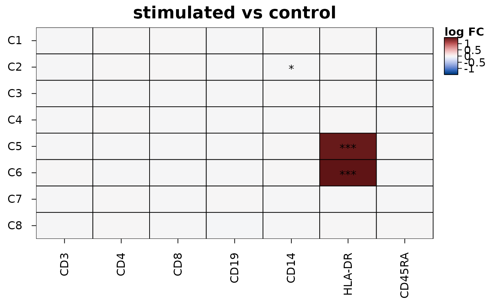

Heatmaps of the differences between two conditions in each group of cells
Source:R/heat_map_contrast.R
heat_map_contrast.Rdheat_map_contrast() compares two conditions (e.g. treated and
control) in each group of cells (e.g. cell type or cluster) and draws the
difference of each feature - its log fold change - in each group, on a
diverging colour scale, with stars where it is significant. The test is a
pseudobulk test across samples: the cells of each group in each sample are
summarised into one value, and the samples (e.g. donors) are the
replicates, so that the thousands of cells of a sample don't count as
independent observations - tests of single cells find nearly every gene
significant with enough cells, while only differences that hold from one
sample to the next are real (Squair et al. 2021).
Arguments
- x
single-cell data (see
heat_map).- group_by
the group of each cell (e.g. its cell type): a column of the metadata, several, or one value per cell. Each group is a row of the heatmap.
- condition_by
the condition of each cell, as for
group_by; each sample must be in one condition.- sample_by
the sample of each cell (e.g. the donor), as for
group_by: the replicates of the test.- features
the features to test and draw (names, indices or a named list of groups of features), or
NULL(default) to test every feature and draw thenwith the smallest adjusted p-values in each group.- assay
the assay of single-cell objects (see
heat_map).- contrast
the two conditions compared, as
c(test, reference); by default the second level of the conditions against the first. The differences are test minus reference.- values
"mean"or"logcpm"(see Details).- transform, cofactor
the transform of the values of the cells before they are summarised, e.g.
"asinh"for cytometry (seeheat_map_dot).- min_cells
the smallest number of cells of a group in a sample for the sample to be compared, 10 by default.
- min_counts
with
values = "logcpm", the counts a feature needs in enough samples to be tested, 10 by default (see Details).- n
the number of features drawn for each group when
featuresisNULL, 5 by default.- stars
the adjusted p-values below which cells get one, two and three stars,
c(0.05, 0.01, 0.001)by default;NULLfor no stars.- draw
logical, whether to draw the heatmap (default) or only return the results.
- ...
other arguments of
heat_map, which replace those set here.
Value
With draw = TRUE, the heatmap (an object of class
heat_map) with the results in its "contrast" attribute,
invisibly; with draw = FALSE, the results: a data.frame of class
heat_map_contrast with one row per group and feature tested -
group, feature, logfc (test minus reference),
t (the moderated t statistic), p_value, p_adj,
mean_test, mean_reference, the numbers of samples of each
condition compared (samples_test, samples_reference) and
cells.
Details
For each group, the samples of the two conditions with at least
min_cells cells in the group are compared feature by feature with a
moderated t-test (Smyth 2004): the variance of each feature among the
samples of its condition is shrunk towards a prior estimated from all the
features of the group, which steadies tests of the few samples that
experiments have. The prior's degrees of freedom and scale are found by
the method of moments on the log variances, as Smyth (2004) describes.
The results are those of limma's lmFit() and eBayes() on
the same pseudobulk values (compared as a black box), except that
features whose variance is zero are left out of the estimation of the
prior (limma moves them just above zero), and features with the same
value in every sample compared (e.g. not detected in the group) aren't
tested. The p-values are adjusted within each group for the features
tested (Benjamini and Hochberg 1995).
values = "mean" (default) compares the mean of each sample's cells
of log-normalised values (e.g. the
logcountsof a SingleCellExperiment), or of transformed cytometry intensities (transform = "asinh") - so the difference is a log fold change in the units of the data.values = "logcpm"sums the counts of each sample's cells (assay = "counts") and compares their log2 counts per million, as limma-voom and edgeR-based pseudobulk analyses do; the features with fewer thanmin_countscounts in as many samples as the smaller condition has aren't tested, as edgeR'sfilterByExpr()leaves them out, since the logs of a few counts vary too little from one sample to the next for their variances to be trusted.
References
Smyth GK (2004). Linear models and empirical Bayes methods for assessing differential expression in microarray experiments. Statistical Applications in Genetics and Molecular Biology 3(1), Article 3. doi:10.2202/1544-6115.1027
Squair JW et al. (2021). Confronting false discoveries in single-cell differential expression. Nature Communications 12, 5692. doi:10.1038/s41467-021-25960-2
Benjamini Y and Hochberg Y (1995). Controlling the false discovery rate: a practical and powerful approach to multiple testing. Journal of the Royal Statistical Society: Series B 57(1), 289-300. doi:10.1111/j.2517-6161.1995.tb02031.x
See also
heat_map_markers for markers of each group against
the other cells, heat_map_composition for differences in
the make-up of samples
Examples
# HLA-DR rises in clusters C5 and C6 of the stimulated samples
events <- heat_map_example("cytometry")
heat_map_contrast(
events,
group_by = "cluster",
condition_by = "condition",
sample_by = "sample",
features = c("CD3", "CD4", "CD8", "CD19", "CD14", "HLA-DR", "CD45RA"),
transform = "asinh",
popup = FALSE
)
#> Applying the asinh transform (cofactor 5)...
